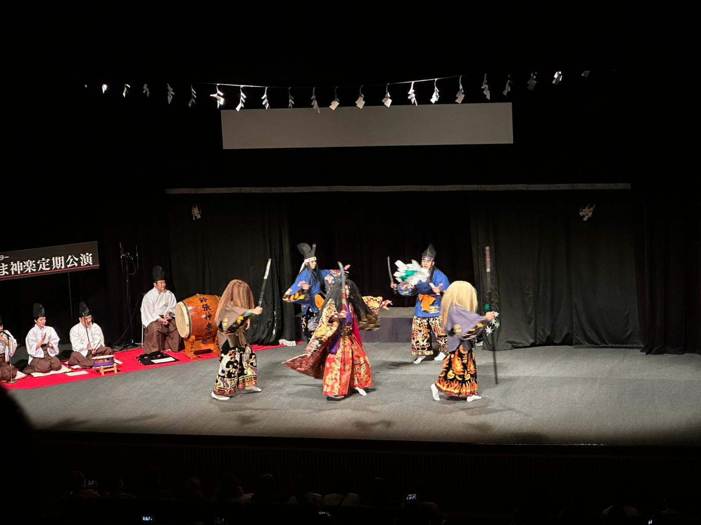

伝統芸能 · Traditional Performing Arts
Japanese Cultural Performances
Music, masks, and movement passed down through the centuries.
Japan has a rich array of traditional performing arts — among them Kagura, the most famous; Nohgaku and Kyōgen, which are staged together; Bugaku; and Nihonbuyo, among others.
Kagura
Kagura is performed to entertain the gods. It weaves together music, dance, and storytelling. It is danced by men, because it is so energetic, and they wear masks to conceal their emotions, along with beautiful and elaborate costumes. The most fascinating part is the way the actors switch masks right there on stage — yet you never quite catch how they do it.

Nohgaku
Nohgaku brings together two of Japan's oldest classical arts: Noh, a stately masked dance-drama performed to chant and music, and Kyōgen, its lighter, comic counterpart staged between the Noh plays. Slow, refined, and deeply atmospheric, Noh is among the oldest living theatre traditions in the world — and you can still watch it performed on the stage of Itsukushima Shrine on Miyajima Island.
A single gesture, held just long enough to mean everything.